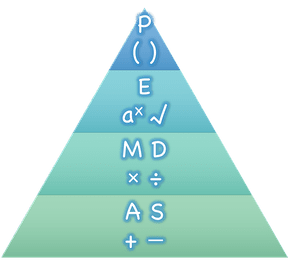

Order of Operations
(Also available in WeScheme)
Students learn to model arithmetic expressions with a visual tool for Order of Operations, known as "Circles of Evaluation".
|
Lesson Goals |
Students will be able to:
|
|
Student-facing Goals |
|
|
Materials |
|
|
Key Points For The Facilitator |
|
circle of evaluation-
a 'sentence diagram' of the structure of a mathematical expression
error message-
information from the computer about errors in code
expression-
a computation written in the rules of some language (such as arithmetic, code, or a Circle of Evaluation)
function-
a relation from a set of inputs to a set of possible outputs, where each input is related to exactly one output
operator-
a symbol that manipulates two Numbers and produces a result
| Order of Operations | 30 minutes |
Overview
Students are given a challenging expression that exposes common misconceptions about order of operations. The goal is to demonstrate that a brittle, fixed notion of order of operations is insufficient, and lead students to a deeper understanding of order of operations as a grammatical device. The Circles of Evaluation are introduced as "sentence diagramming for arithmetic".
Launch
Humans use verbs like "throw", "run", "build" and "jump" to describe operations on nouns like "ball", "puppy", and "blocks". Mathematics has "operations" , like addition and subtraction. Just as you can "throw a ball", a person can also "add four and five".
A mathematical expression is an instruction for doing something, which specifies the verbs and nouns involved. The expression 4 + 5 tells us to add 4 and 5. To evaluate an expression, we follow the instructions. The expression 4 + 5 evaluates to 9.
If you were to write instructions for getting ready for school, it would matter very much which instruction came first: putting on your socks, putting on your shoes, etc. Sometimes we need multiple expressions in mathematics, and the order matters there, too!

{kind=link}
The pyramid on the right is a model for summarizing the order of operations. When evaluating an expression, we begin by applying the operations written at the top of the pyramid (operations in parentheses and other grouping symbols). Only after we have completed all of those operations can we move down to the lower level. If both operations from the same level are present (as in 4 + 2 - 1), we read the expression from left to right, applying the operations in the order in which they appear. This set of rules is brittle, and doesn’t always make it clear what we need to do. Mnemonic devices for the order of operations like PEMDAS, GEMDAS, etc focus on how to get the answer. What we need is a better way to read math.
-
Check out the expression below. What do you think the answer is?
-
Students will likely offer 9 (correct) and 1 (incorrect).
-
-
This math problem went viral on social media recently, with math teachers arguing about what the answer was! Why might they disagree on the solution?
-
Disagreement on the solution is a result of disparate ideas of how to parse the problem.
-
6 ÷ 2(1 + 2)
Instead of using a rule for computing answers, let’s start by diagramming the math itself!
Circles of Evaluation The Circles of Evaluation are a critical pedagogical tool in this course. They place the focus on the structure of mathematical expressions, as a means of combating the harmful student belief that the only thing that matters is the answer. They can be used to diagram arithmetic sentences to expose common misconceptions about Order of Operations, and make an excellent scaffold for tracing mistakes when a student applies the Order of Operations incorrectly. They are also a bridge representation, which naturally connects to function composition and converting arithmetic into code. |
We can draw the structure of this grammar in mathematics using something called the Circles of Evaluation. The rules are simple:
1) Every Circle must have one - and only one! - function, written at the top.
That means that Numbers (e.g. - 3, -29, 77.01…) are still written by themselves. It’s only when we want to do something like add, subtract, etc. that we need to draw a Circle.
2) The inputs to the function are written left-to-right, in the middle of the Circle.
If we want to draw the Circle of Evaluation for 6 ÷ 3, the division function (/) is written at the top, with the 6 on the left and the 3 on the right.
| / | ||
|
What if we want to use multiple functions? How would we draw the Circle of Evaluation for 6 ÷ ( 1 + 2 )? Drawing the Circle of Evaluation for the 1 + 2 is easy. But how do we take the result of that circle, and divide 6 by it?
Circles can contain other Circles
We basically replace the 3 from our earlier Circle of Evaluation with another Circle, which adds 1 and 2!
| / | ||||||
|
What would the Circle of Evaluation for 5 × 6 look like?
| * | ||
|
How about the Circle of Evaluation for (10 - 5) × 6?
| * | ||||||
|
Aside from helping us catch mistakes before they happen, Circles of Evaluation are also a useful way to think about transformation in mathematics. For example, you may have heard that "addition is commutative, so a + b can always be written as b + a." For example, 1 + 2 can be transformed to 2 + 1.
Suppose another student tells you that 1 + 2 × 3 can be rewritten as 2 + 1 × 3. This is obviously wrong, but why?
Take a moment to think: what’s the problem? We can use the Circles of Evaluation to figure it out!
The first Circle is just the original expression. The second expression represents what the (incorrect) commutativity transformation gives us:
|
? → |
|
In this case, the student failed to see the structure, viewing the term to the right of the + sign as 2 instead of 2 × 3. The Circles of Evaluation help us see the structure of the expression, rather than forcing us to construct it and keep it in our heads.
Investigate
Turn to Translate Arithmetic to Circles of Evaluation & Code (Intro) in the student workbook and draw Circles of Evaluation for each of the expressions. (Ignore the code column for now! We will come back to it later.)
Spend some time ensuring that students have drawn their circles correctly. You may want to have them compare their circles with a partner and another pair of partners or you may want to post an answer key. Students will use their circles to write code in the next segment of the lesson - so this step is crucial.
You may also want to have students complete Completing Circles of Evaluation from Arithmetic Expressions, Matching Circles of Evaluation and Arithmetic Expressions and/or Matching Circles of Evaluation to Expressions (Desmos).
Pedagogy Note Circles of Evaluation are a great way to get older students to reengage with (and finally understand) the order of operations while their focus and motivation are on learning to code. Because we recognize this work to be so foundational, and know that some teachers choose to spend a whole week on it, we have developed lots of additional materials to help scaffold and stretch. You will find some additional pages in the workbook and over 20 more linked in the Additional Exercises section at the the end of this lesson. |
Synthesize
-
Did some students prefer working outside-in to inside-out? Why?
-
Did some students find that different strategies worked better for different kinds of problems? Why or why not?
-
Is there more than one way to draw the Circle for 1 + 2? If so, is one way more "correct" than the other?
| From Circles of Evaluation to Code | 25 minutes |
Overview
Students learn how to use the Circles of Evaluation to translate arithmetic expressions into code.
Launch
When converting a Circle of Evaluation to code, it’s useful to imagine a spider crawling through the circle from the left and exiting on the right.
The first thing the spider does is cross over a curved line (an open parenthesis!). For operators (addition, subtraction, etc.) - The spider visits the first number on the left, then she visits the top of the circle for the operation, then the number on the right. Finally, she has to leave the circle by crossing another curved line (a close parenthesis).
Expression |
→ |
3 + 8 |
||||
Circle of Evaluation |
→ |
|
||||
Code |
→ |
|
Arithmetic expressions involving more than one operation, will end up with more than one circle, and, whether or not there are parentheses in the original expression, the code requires parentheses to clarify the order in which the operations should be completed.
Expression |
→ |
2 × ( 3 + 8 ) |
||||||||
Circle of Evaluation |
→ |
|
||||||||
Code |
→ |
|
-
Why are there two closing parentheses in a row, at the end of the code?
-
If an expression has three sets of parentheses, how many Circles of Evaluation do you expect to need?
What would the code look like for these circles?
|
|
Investigate
If you have time, start with the two pages in the student workbook that scaffold translating circles to code: Completing Partial Code from Circles of Evaluation and Matching Circles of Evaluation & Code.
-
Now that we know how to translate Circles of Evaluation into Code, turn back to Translate Arithmetic to Circles of Evaluation & Code (Intro). Translate the circles you drew into code!
-
Once you confirm that your code is correct, continue on to Translate Arithmetic to Circles of Evaluation & Code 2.
-
If time allows, take turns entering the code into the editor with your partner.
Note: Translate Arithmetic to Circles of Evaluation & Code (Intro) offers students the scaffold of extra parentheses. Those scaffolds drop away on Translate Arithmetic to Circles of Evaluation & Code 2.
There is one page of more complex problems - Arithmetic Expressions to Circles of Evaluation & Code - Challenge - so that you’re ready to challenge students who fly. Make sure these students know that we use num-sqrt as the name of the square root function, and num-sqr as the function that squares its input.
In Pyret, operators like +, -, *, and / are written in between their inputs, just like in math. Function names like f, g, num-sqrt and num-sqr get written at the beginning of an expression, for example f(x) or num-sqrt(9)
Strategies For English Language Learners MLR 7 - Compare and Connect: Gather students' graphic organizers to highlight and analyze a few of them as a class, asking students to compare and connect different representations. |
Synthesize
Have students share back what they learned from the Circles of Evaluation.
As in math, there are some cases where the outermost parentheses can be removed in Pyret:
-
(1 + 2) can be safely written as 1 + 2, and the same goes for the Pyret code
-
(1 * 2) * 3) can be safely written as 1 * 2 * 3, and the same goes for the Pyret code
You will likely see code written using this "shortcut", but it’s always better to at least start with the parentheses to make sure your math/code is correct before taking them out. It is never wrong to include them!
| Testing out your Code | optional |
Overview
Circles of Evaluation are a powerful tool that can be used without ever getting students on computers. If you have time to introduce students to the code.pyret.org (CPO), typing their code into the Interactions Area gives students a chance to get feedback on their use of parentheses as well as the satisfaction of seeing their code successfully evaluate the expressions they’ve generated.
Launch
-
Open code.pyret.org (CPO) and click "Run".
-
For now, we are only going to be working in the Interactions Area on the right hand side of your screen.
-
Type
(8 * 2) + (6 / 3)into the Interactions Area. -
Notice how the editor highlights pairs of parentheses to help you confirm that you have closed each pair.
-
Hit Enter (or Return) to evaluate this expression. What happens? If you typed the code correctly you’ll get 18. If you make a mistake with your typing, the computer should help you identify your mistake so that you can correct it and try it again!
-
Take a few minutes to go back and test each line of code you wrote on the pages you’ve completed by typing them into the Interactions Area. Use the error messages to help you identify any missing characters and edit your code to get it working.
Investigate
Here are two Circles of Evaluation.
|
|
One of them is familiar, but the other is very different from what you’ve been working with. What’s different about the Circle on the right?
Possible responses:
-
We’ve never seen
textbefore -
We’ve never seen words like "red" used in a Circle of Evaluation before
-
We’ve never seen three inputs
-
We’ve never seen a mix of Numbers and words
There’s more than just operators like addition and subtraction! Math also has functions, and so does Pyret! In math, the name of the function comes first, and Pyret is no differeny.
When converting a Circle of Evaluation that has a function, the spider starts at the top and visits the function, then visits the inputs from left-to-right.
Here’s those same two Circles - one for an operator and another for a function - along with the code for each one:
|
|
|||||||||
|
|
-
Can you figure out the Name for the function in the second Circle? This is a chance to look for and make use of structure in deciphering a novel expression! We know the name of the function is
text, because that’s what is at the top of the circle. -
What do you think this expression will evaluate to?
-
Convert this Circle to code and try it out!
-
What does the
50mean to the computer? Try replacing it with different values, and see what you get. -
What does the
"blue"mean to the computer? Try replacing it with different values, and see what you get.
Here is another circle to explore.
| string-length | |
|
-
What do you think this expression will evaluate to?
-
Convert this Circle to code and try it out!
Synthesize
Now that we understand the structure of Circles of Evaluation, we can use them to write code for any function!
🔗Additional Exercises
If you are digging into Order or Operations and are looking for more practice with Circles of Evaluation before introducing code, we have lots of options!
More practice connecting Circles of Evaluation to Code
More 3-column practice connecting Arithmetic Expressions with Circles of Evaluation and Code:
More 3-column practice with negatives:
More 3-column practice with square roots:
3-column challenge problems with brackets and exponents:
These materials were developed partly through support of the National Science Foundation,
(awards 1042210, 1535276, 1648684, and 1738598).  Bootstrap by the Bootstrap Community is licensed under a Creative Commons 4.0 Unported License. This license does not grant permission to run training or professional development. Offering training or professional development with materials substantially derived from Bootstrap must be approved in writing by a Bootstrap Director. Permissions beyond the scope of this license, such as to run training, may be available by contacting contact@BootstrapWorld.org.
Bootstrap by the Bootstrap Community is licensed under a Creative Commons 4.0 Unported License. This license does not grant permission to run training or professional development. Offering training or professional development with materials substantially derived from Bootstrap must be approved in writing by a Bootstrap Director. Permissions beyond the scope of this license, such as to run training, may be available by contacting contact@BootstrapWorld.org.